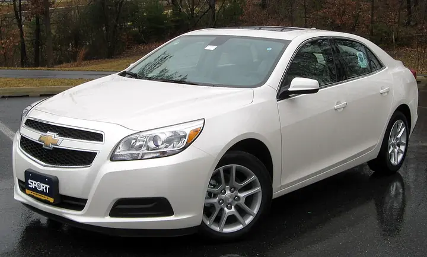
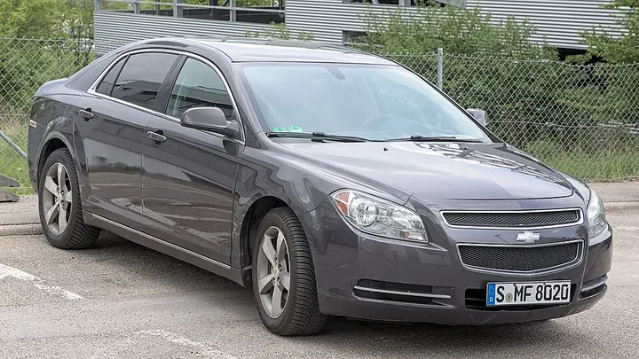
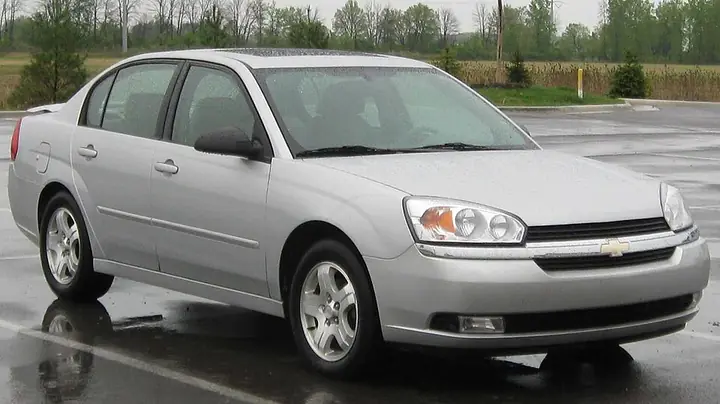
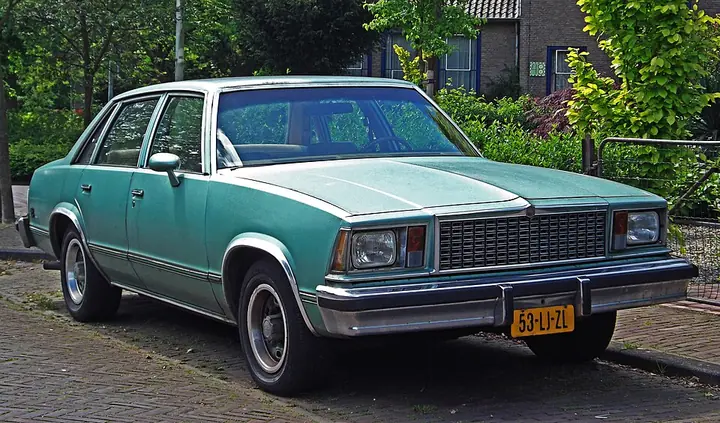
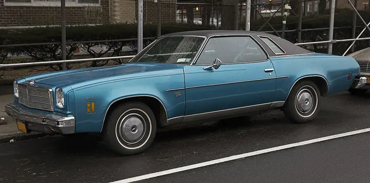
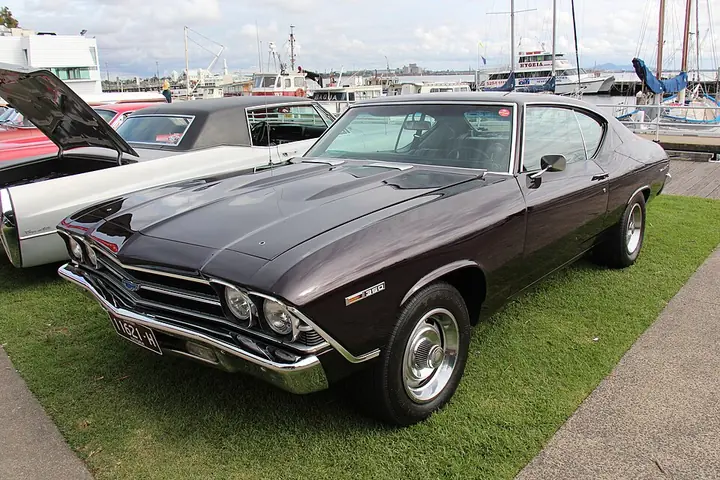
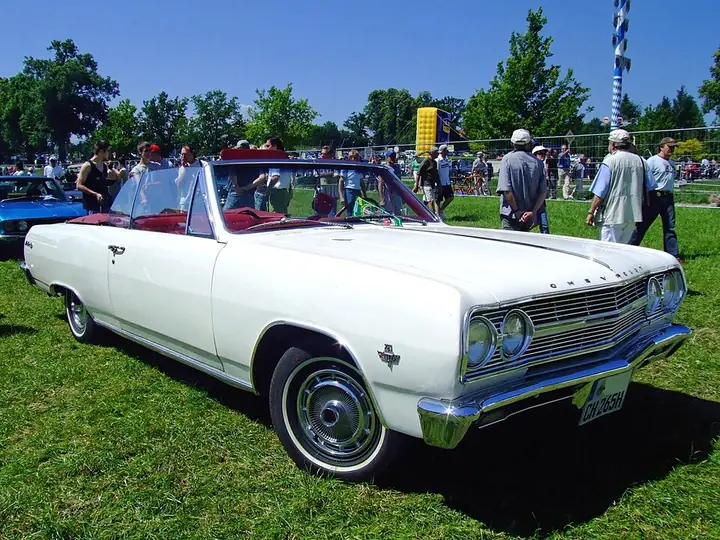

Chevrolet Malibu
Ninth generation (2016) · 2015–2026
Abstract
This generation of the Chevrolet Malibu was built 2015–2024 (US) in United States: Kansas City, Kansas (Fairfax Assembly), China: Shanghai (SAIC-GM), South Korea: Bupyeong (GM Korea) and other plants. Body styles: 4-door sedan. Layout: Front-engine, front-wheel-drive. Designed by Jaymer Starbody (2012).


1Specifications
| Production | 2015–2024 (US)2016–2026 (China) |
|---|---|
| Model years | 2016–2025 (North America)2018–2021 (Philippines)2016–2022 (Middle East and South Korea)2017–2019 (Uzbekistan) |
| Assembly | United States: Kansas City, Kansas (Fairfax Assembly)China: Shanghai (SAIC-GM)South Korea: Bupyeong (GM Korea)Uzbekistan: Tashkent (GM Uzbekistan)Azerbaijan: Hajigabul (AzerMash) |
| Designer | Jaymer Starbody (2012) |
| Body style | 4-door sedan |
| Layout | Front-engine, front-wheel-drive |
| Platform | E2XX platform |
| Engine | gasoline:1.35 L EcoTec Turbo I31.5 L EcoTec Turbo I4(China: 535T)2.0 L EcoTec Turbo l42.0 L EcoTec Turbo l4(China: 550T)2.5 L LKW l4hybrid:1.8 L 'LKN' Hybrid l4diesel:1.6 L LH7 Turbo Diesel I4 |
| Electric motor | 2 × 121 kW GM Voltec integrated electric motors (Malibu Hybrid) |
| Transmission | 6-speed GM 6T45 automatic(2016–2022)7-speed DCG DCT (2016–2018)8-speed Aisin AWF8F45 automatic(2016–2018)9-speed Hydra-Matic 9T50 automatic(2017–2025)GM Voltec 5ET50 (MKE) (2016–2019) Multi-mode two motor, electronic continuously-variable automatic transaxle (Hybrid model)GM CVT250 (MRG) CVT (2019–) |
| Battery | 80-cell 1.5-kWh Li-ion |
| Wheelbase | 111.4 in |
| Length | 193.8 in194.2 in(facelift 2019–2025) |
| Width | 73.0 in |
| Height | 57.3 in58.1 in (Malibu XL) |
| Weight | 3086–3457 lb |
| Also called | Chevrolet Malibu XL (China) |
| Related | Buick RegalHolden Commodore (ZB)Opel InsigniaVauxhall Insignia |
2Versions
- Hybrid
- 2019 mid-cycle refresh (facelift)
3Previous generations



_1X7A7375.jpg){kind=link}




_(cropped).jpg){kind=link}



.jpg){kind=link}


4Generation by generation
Length +1% from the first to the last
1978 19784,895 mm
1997 19964,836 mm
GMX380 20034,770 mm
2008 20074,872 mm
2013 20114,859 mm
2016 20154,923 mm
Weight +1% from the first to the last
1997 19961,384 kg
GMX380 20031,440 kg
2008 20071,549 kg
2013 20111,539 kg
2016 20151,400 kg